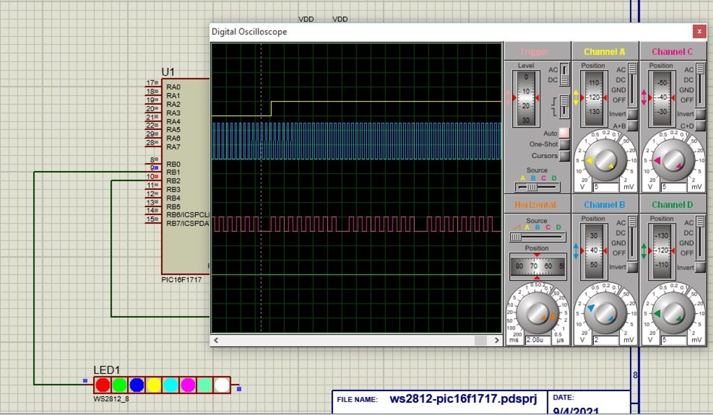
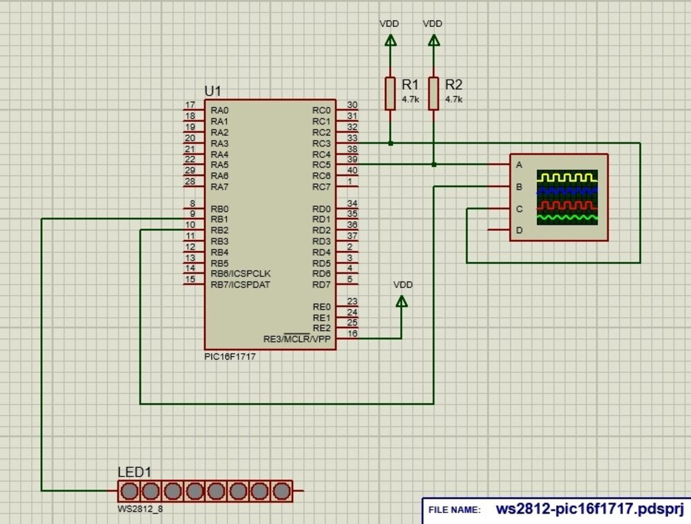
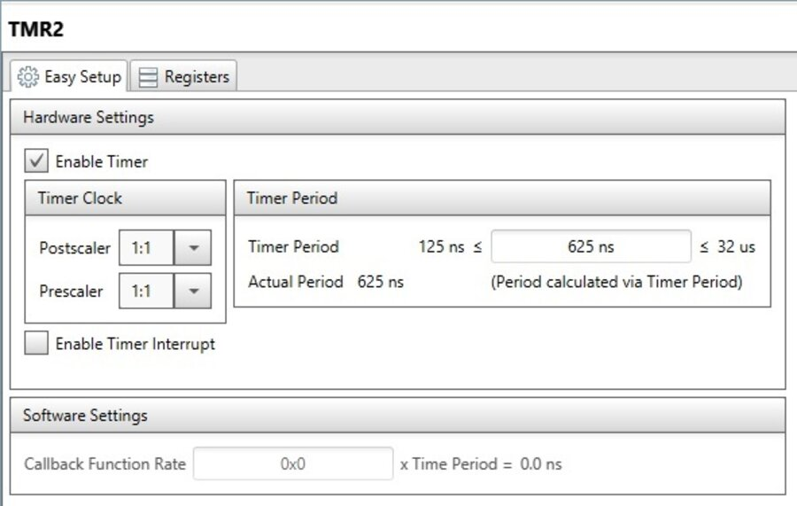
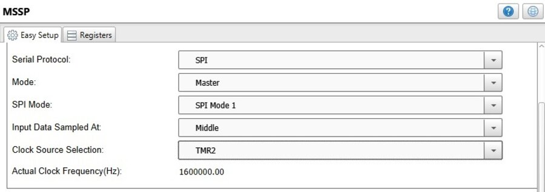
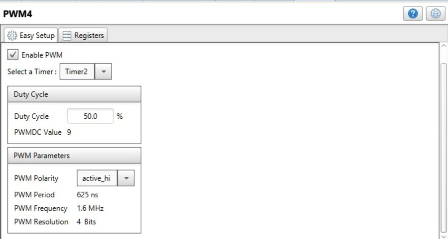
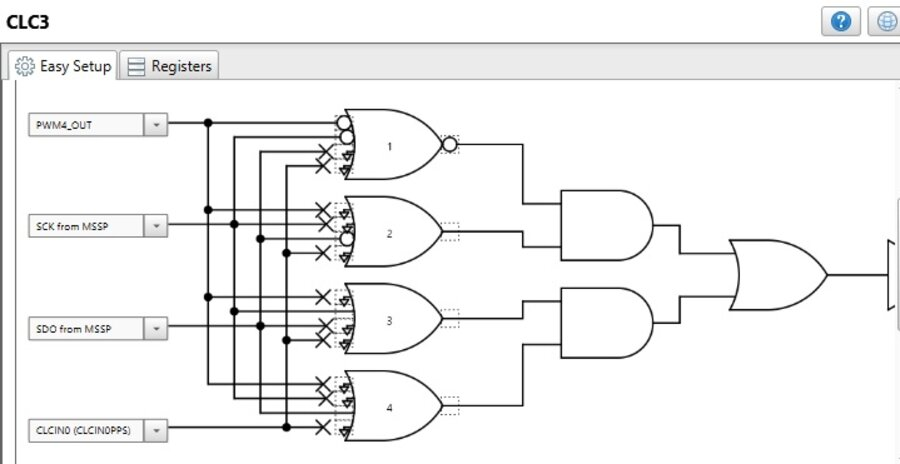
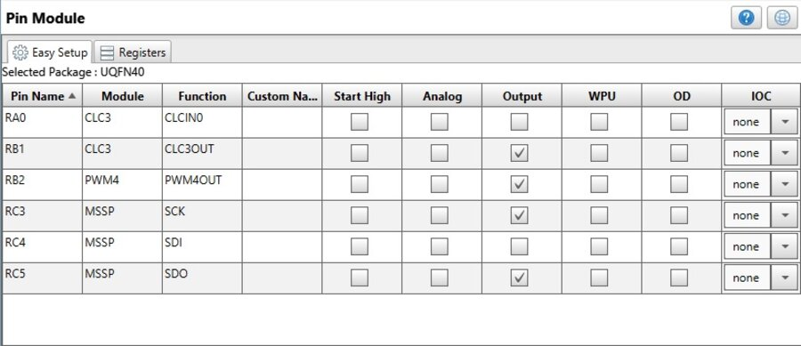

Driving WS2812 LEDs with a PIC16F1717
A driver for WS2812 addressable RGB LEDs on the PIC16F1717, built so that the Core Independent Peripherals generate the LED waveform and the CPU spends no cycles on bit timing. Configured with MPLAB Code Configurator and simulated in Proteus.

Proteus schematic — the PIC drives the 8‑pixel strip from a single pin (RB1).
The WS2812 Protocol
Each WS2812 pixel takes 24 bits of colour (8 bits green, then red, then blue) on a single data line. Every bit is a fixed ~1.25 µs window, and the value is encoded by how long the line stays high inside it: a short high pulse (~0.35 µs) is a 0, a long one (~0.7 µs) is a 1. A gap of >50 µs latches the frame. Pixels are daisy‑chained — each one keeps the first 24 bits and forwards the rest.
The timing is tight enough that bit‑banging it in software ties up the whole CPU and is fragile across clock speeds and compilers. The usual fixes are a dedicated library, DMA + a timer, or — here — letting the chip's hardware peripherals build the waveform.
The Approach — Core Independent Peripherals
This project follows Microchip Application Note AN1606: four peripherals are wired together so that writing a byte to the SPI buffer produces a datasheet‑compliant WS2812 signal, with no interrupts and no timing loops.
- Timer2 is the shared time base for everything below.
- MSSP in SPI master mode clocks the raw colour bits out at the WS2812 bit rate (SCK ~800 kHz, data on SDO).
- PWM4, also running from Timer2, produces a short fixed‑width pulse at the start of every bit — the “0” waveform.
- CLC3 (a Configurable Logic Cell) combines the PWM pulse, the SPI clock and the SPI data in an AND‑OR gate: the output always gets the leading pulse, and when the data bit is a 1 the pulse is held high for the rest of the bit window. Its output pin (RB1) is the LED data line.
So the CPU just pushes bytes into SSP1BUF; the peripherals turn each one into the right sequence of long and short pulses.
Getting Started
This project is hosted on GitHub:
git clone https://github.com/leonardoward/pic16-ws2812-proteus.gitDependencies
- MPLAB X with the XC8 compiler (the peripheral setup uses MPLAB Code Configurator).
- Proteus — projects are provided for v11 and v12, and use only stock library parts.
Build the MPLAB X project to produce the .hex, then point the PIC model in Proteus at that file and run the simulation. A pre‑built .hex is included in each Proteus folder.
Peripheral Configuration (MCC)
Every peripheral is set up in MPLAB Code Configurator; the repository has a screenshot of each panel. The device runs from the 8 MHz internal oscillator with the 4× PLL, for a 32 MHz system clock.
Timer2
Timer2 is left at a short period (PR2 = 4, no pre‑/post‑scale). It clocks both the SPI and PWM4, which is what keeps the two in lockstep.

Timer2 — the shared time base.
MSSP (SPI Master)
The MSSP is an SPI master in Mode 1, clocked from Timer2, giving an ~800 kHz bit clock — one SPI bit per WS2812 bit. Only SCK and SDO are used, feeding the CLC; the LED strip is never wired to them directly.

MSSP — SPI master clocked from Timer2.
PWM4
PWM4 shares Timer2 and runs at a low duty cycle, so on every bit it emits a brief high pulse — the “0” code and the leading edge of the “1” code.

PWM4 — the fixed leading pulse.
CLC3
CLC3 is where the waveform is actually assembled. In AND‑OR mode it takes PWM4 OUT, SCK and SDO as inputs and gates them so that the output pin carries the PWM pulse for a “0” and a stretched pulse for a “1”. See AN1606 for the exact gate equations.

CLC3 — AND‑OR gate combining PWM4, SCK and SDO into the WS2812 waveform.
Pin Assignment
| Pin | Function |
|---|---|
| RB1 | CLC3 output — the WS2812 data line to the strip |
| RB2 | PWM4 output (internal, feeds CLC3) |
| RC3 | SPI SCK (internal, feeds CLC3) |
| RC5 | SPI SDO (internal, feeds CLC3) |
| RA0 | CLCIN0 (CLC3 input) |

Pin Module — only RB1 (the CLC output) drives the LED strip; the SPI and PWM pins are broken out for probing.
Firmware
Because the peripherals do the timing, main.c is tiny. A macro pushes the three colour bytes of a pixel into the SPI buffer in the WS2812's green‑red‑blue order, waiting on the buffer‑full flag between bytes:
#define writePixel(r,g,b) do{ \
SSP1BUF = g; while(!SSP1STATbits.BF); \
SSP1BUF = r; while(!SSP1STATbits.BF); \
SSP1BUF = b; while(!SSP1STATbits.BF); \
} while(0)main() opens the SPI, clears the eight pixels to black, then loops forever writing a fixed test pattern — red, green, blue, yellow, cyan, magenta, pale green and white — with a short delay as the latch gap.
Simulation
In Proteus the PIC drives a WS2812×8 part while a logic analyser probes the SPI and PWM pins. The strip shows the eight test colours and the analyser traces show the per‑bit pulses being built.
Simulation result — the eight‑colour test pattern and the generated waveforms.
Notes
- The firmware writes a hard‑coded pattern — the natural next step is a small framebuffer and a
show()that streams it. - The latch gap in the loop is a few microseconds; the datasheet asks for >50 µs, so it should be lengthened before running on real silicon (the Proteus model latches on any gap).
- The pulse widths come straight from AN1606's PIC16F1509 example; on hardware they are worth checking against the specific WS2812 variant.
Further Reading
- WS2812B datasheet
- AN1606 — Using the CLC to interface a PIC16F1509 with a WS2811 LED driver
- Interfacing with WS2812 Neopixel LED Arrays (PIC16F18855)
- WS281x using PIC